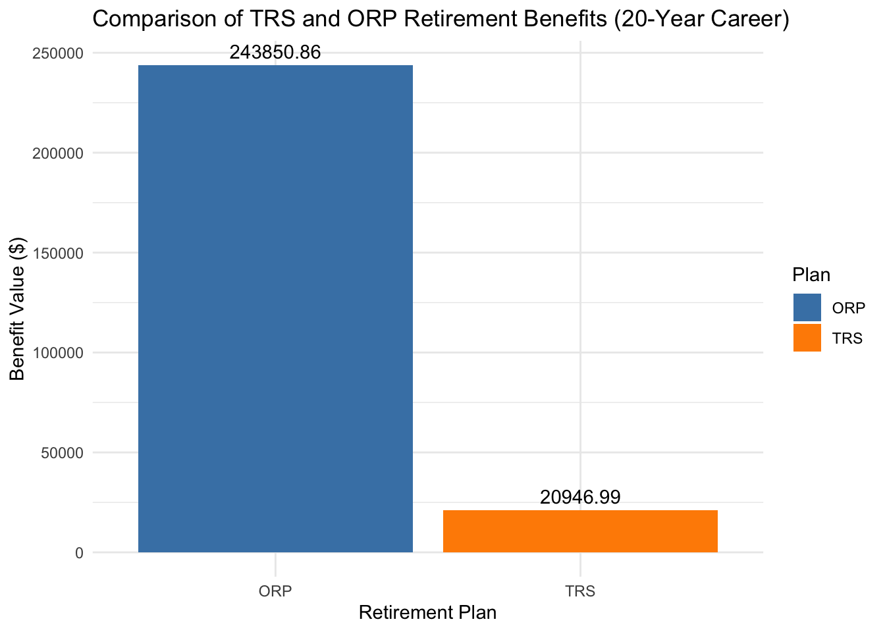
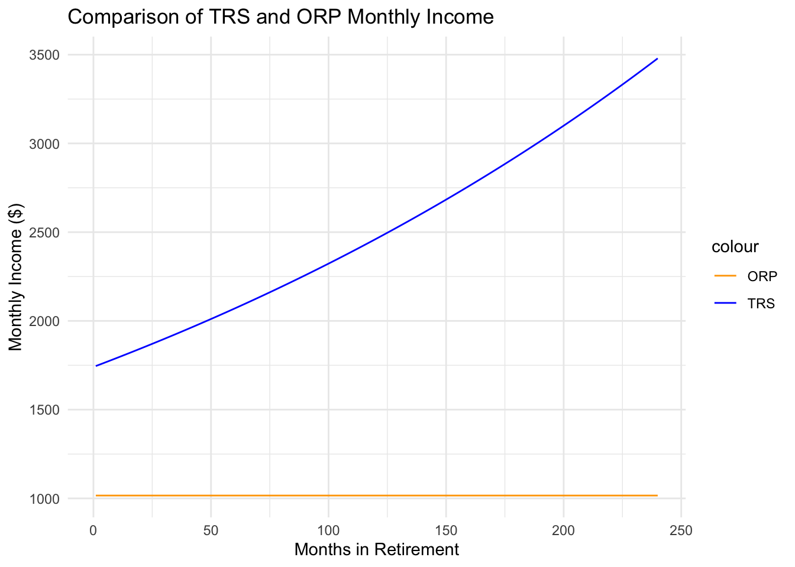
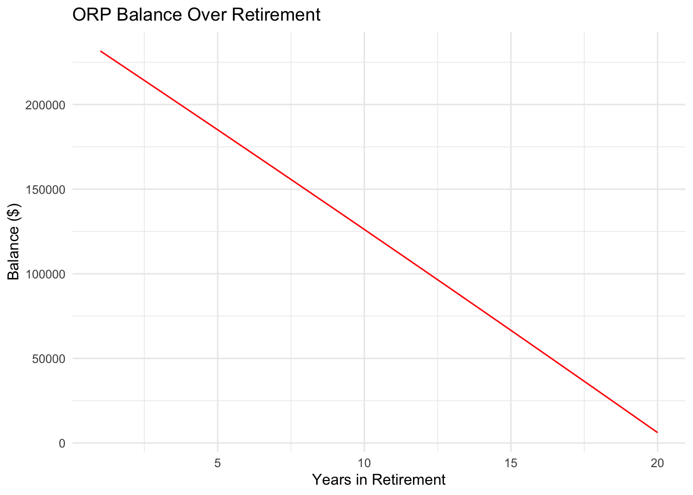

Hello all, to my last mini project of the Fall semester of 2024. My focus is on retirement, a topic that scares many people including our own teachers at CUNY. CUNY teachers are offered two different permanent retirement plans that they must choose shortly after they are hired: The Teacher’s Retirement System (TRS) or the Optional Retirement Plan (ORP). Using historical data such as wage growth and inflation accessed via Alpha Vantage & FRED API’s I have employed multiple simulations in order to see which one is the better choice under a classic 20 year career and 20 year retirement simulation.. Thank you, I hope you enjoy!
Step 1: Installing and loading necessary packages
Code
library(httr2)library(tidyverse)
── Attaching core tidyverse packages ──────────────────────── tidyverse 2.0.0 ──
✔ dplyr 1.1.4 ✔ readr 2.1.5
✔ forcats 1.0.0 ✔ stringr 1.5.1
✔ ggplot2 3.5.1 ✔ tibble 3.2.1
✔ lubridate 1.9.3 ✔ tidyr 1.3.1
✔ purrr 1.0.2
── Conflicts ────────────────────────────────────────── tidyverse_conflicts() ──
✖ dplyr::filter() masks stats::filter()
✖ dplyr::lag() masks stats::lag()
ℹ Use the conflicted package (<http://conflicted.r-lib.org/>) to force all conflicts to become errors
Code
library(lubridate)library(DT)library(ggplot2)
These will be all of the packages used in this analysis. Note: The use of httr2 is extremely important as you will not be able to access API’s without it.
In order to access the data from Alpha Vantage and the FRED you need to have your own API keys. You can access that clicking on the links above. When accessing the keys in your environment you can do it in two ways: .Renviron or Sys.setenv. If you are using the keys in a report such as this .Renviron is a better alternative.
Step 3: Accessing data (Note: this will be very long)
Code
wage_growth_response <-request("https://api.stlouisfed.org/fred/series/observations") %>%req_url_query(series_id ="CES0500000003",api_key = fred_api_key,file_type ="json") %>%req_perform()wage_growth_data <- wage_growth_response %>%resp_body_json() %>%pluck("observations") %>%map_dfr(as_tibble) %>%mutate(date =as.Date(date), value =as.numeric(value))wage_growth_data <- wage_growth_data %>%arrange(date) %>%# Ensure data is sorted by datemutate(wage_growth_rate = (value -lag(value)) /lag(value) *100# Percentage change )# Inspect the first few rowshead(wage_growth_data)
Using the API keys and dplyr I have been able pull data from the two Alpha Vantage and the FRED and formulate it into six distinct tables : wage growth, inflation, us_equity, international equity, bond market, and short_term_debt. Note that all data has been modified to show monthly frequencies with the exception of the bond market table.
Step 4: Calculating long run averages and variance
Code
#Part 4# Compute Long-Run Averages and variance in a datatable## Calculate Long-Run Averages and Variancessummary_table <-data.frame(Series =c("Wage Growth", "Inflation", "US Equity", "International Equity", "Bond Market", "Short-Term Debt"),Long_Run_Average =c(mean(wage_growth_data$wage_growth_rate, na.rm =TRUE), # Use wage_growth_ratemean(inflation_data$inflation_rate, na.rm =TRUE), # Use inflation_ratemean(us_equity_data$adjusted_close, na.rm =TRUE),mean(intl_equity_data$adjusted_close, na.rm =TRUE),mean(bond_market_data$value, na.rm =TRUE),mean(short_term_debt_data$value, na.rm =TRUE) ),Variance =c(var(wage_growth_data$wage_growth_rate, na.rm =TRUE), # Use wage_growth_ratevar(inflation_data$inflation_rate, na.rm =TRUE), # Use inflation_ratevar(us_equity_data$adjusted_close, na.rm =TRUE),var(intl_equity_data$adjusted_close, na.rm =TRUE),var(bond_market_data$value, na.rm =TRUE),var(short_term_debt_data$value, na.rm =TRUE) ))# Display the Summary Table with DTlibrary(DT)datatable( summary_table,options =list(pageLength =5, autoWidth =TRUE),caption ="Summary Table of Long-Run Averages and Variances (Inflation and Wage Growth Rate Adjusted)")
Using the data tables i was able to generate long run averages, and variances for each table. With the sole exception of short term debt. These averages will help in the next steps of my analysis.
Step 5: Historical Comparison
Code
#task 5# Initialize parametersstarting_salary <-50000years <-20# 20-year careerprojected_salary <-numeric(years)projected_salary[1] <- starting_salary# Use average wage growth rateaverage_wage_growth <-mean(wage_growth_data$wage_growth_rate, na.rm =TRUE) /100# Project salary for 20 yearsfor (t in2:years) { projected_salary[t] <- projected_salary[t -1] * (1+ average_wage_growth)}# View the projected salaryprojected_salary
comparison <-data.frame(Plan =c("TRS", "ORP"),Value =c(trs_benefit, orp_balance))# Display the table using DTlibrary(DT)datatable(comparison, options =list(pageLength =5, autoWidth =TRUE),caption ="Comparison of TRS and ORP Retirement Benefits (20-Year Career)")
Code
library(ggplot2)ggplot(comparison, aes(x = Plan, y = Value, fill = Plan)) +geom_bar(stat ="identity") +labs(title ="Comparison of TRS and ORP Retirement Benefits (20-Year Career)",x ="Retirement Plan",y ="Benefit Value ($)" ) +theme_minimal() +scale_fill_manual(values =c("steelblue", "darkorange")) +geom_text(aes(label =round(Value, 2)), vjust =-0.5)

Code
#Looks like the orp beats out the trs heavily
First I would like to establish the parameters set. I assumed that the CUNY employee would start out at a salary of \$50,000. Using the average wage growth I calculated a possible potential salary not accounting for possible promotions within 20 years. Under the TRS’s benefit system it seems that the employee is in a worse position than the ORP’s compound investment system.
# Convert ORP annual withdrawal to monthlyorp_monthly_withdrawals <-rep(orp_withdrawals /12, each =12)# Calculate monthly income gapsincome_gaps <-abs(trs_monthly_benefits - orp_monthly_withdrawals)# Summary statisticssummary <-data.frame(Metric =c("Average Monthly Income (TRS)", "Average Monthly Income (ORP)","Maximum Income Gap", "Minimum Income Gap", "Funds Remaining (ORP)"),Value =c(mean(trs_monthly_benefits),mean(orp_monthly_withdrawals),max(income_gaps),min(income_gaps),max(orp_balance_projection) # ORP funds left at death ))summary
Metric Value
1 Average Monthly Income (TRS) 2513.8870
2 Average Monthly Income (ORP) 1016.0452
3 Maximum Income Gap 2463.0120
4 Minimum Income Gap 729.5375
5 Funds Remaining (ORP) 231658.3161
Code
# Create a time vector for plottingtime <-seq(1, length(trs_monthly_benefits), by =1)# TRS vs ORP Monthly Incomeincome_data <-data.frame(Time = time,TRS = trs_monthly_benefits,ORP = orp_monthly_withdrawals)ggplot(income_data, aes(x = Time)) +geom_line(aes(y = TRS, color ="TRS")) +geom_line(aes(y = ORP, color ="ORP")) +labs(title ="Comparison of TRS and ORP Monthly Income",x ="Months in Retirement",y ="Monthly Income ($)" ) +scale_color_manual(values =c("TRS"="blue", "ORP"="orange")) +theme_minimal()

Code
# ORP Balance Depletionorp_balance_data <-data.frame(Time =seq(1, years_retired, by =1),Balance = orp_balance_projection)ggplot(orp_balance_data, aes(x = Time, y = Balance)) +geom_line(color ="red") +labs(title ="ORP Balance Over Retirement",x ="Years in Retirement",y ="Balance ($)" ) +theme_minimal()

Now, this is even more interesting. Beforehand I would recommend that the ORP would be a better option for someone to take. However, it truly seems that The TRS motto of income for the entirety of your unemployment is true. The ORP seems to start out with a large lump sum, but after 20 years in a fixed income plan of a bit over a $1000 a month the ORP well dries out. Now, as a financial adviser I would say both plans are well thought out. The decision in which one to undergo is up to your personal threshold of risk and how long you plan to be under retirement income. If you plan on being retired for a long time, the TRS is the right choice for you. If you plan on not being retired for a long time and want to pass along a large lump sum of money to family and children or simply live lavishly for ten years I would say the ORP is a better choice. Also, I would like to reiterate that this does not account for large jumps in salary while you are still employed.